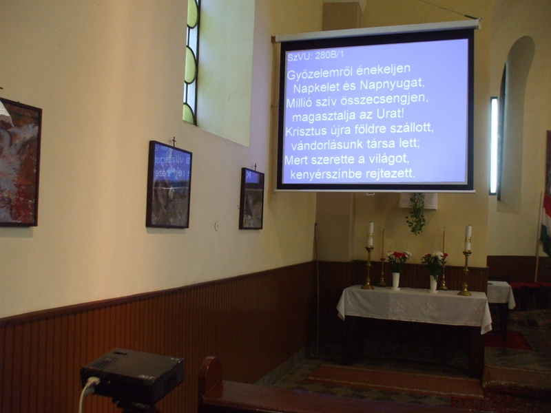
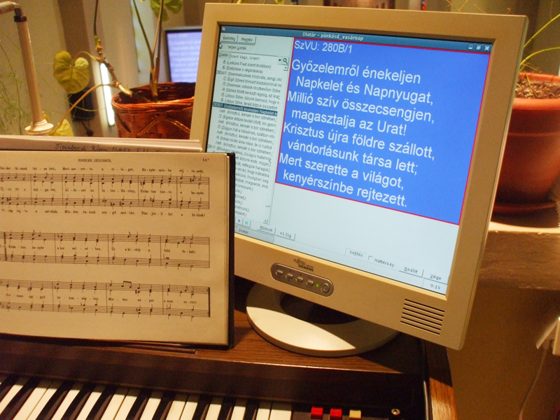
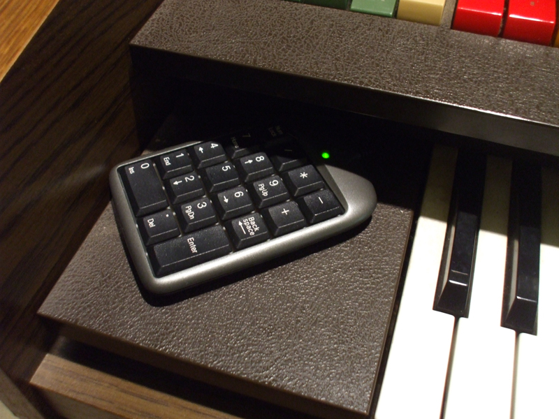

Tiszabercelen, a római katolikus templomban először projektoros énekvetítésre 2010. szenteste kerülhetett sor a DIATÁR program felhasználásával.
Templomunkban hosszú évek óta a hagyományos diavetítőt használtuk az énekversek kivetítésére. Fontosnak tartottuk, hogy az énekek kivetítésre kerüljenek, mert így jobban be tudtuk vonni a híveket az ünneplésbe, és más felekezetek tagjai is könnyebben bekapcsolódtak a liturgiába.
Az akkori plébánosunk Sári András nagyon nyitott volt a templomi énekvetítéssel kapcsolatban és mindennel támogatta azt.
A nagy igyekezet ellenére mi is nagyon sok problémába ütköztünk a hagyományos diavetítővel kapcsolatban, ezért próbáltunk valamilyen más módszert kitalálni.
Ekkor jött a DIATÁR nevű teljesen ingyenes és igen jól használható program, amit azóta is nagy örömmel használunk.
 A vásznat, a vetítőgépet és a számítógépet pályázat és adományok útján nyertük, tehát maga a rendszer nálunk szinte semmibe sem került.
A számítógépet a projektorral egy 25 méter hosszú VGA kábellel kötöttük össze. A kábel hossza nem ment a kivetített kép rovására.
A monitort használtan kaptuk, LCD lapmonitor, kis helyet foglal az orgonán. 
 A versek léptetésére beszereztünk egy numerikus billentyűzetet, ami USB porton kapcsolódik a számítógéphez. Nagyon olcsó és nagyon jól használható, csak meg kell jelölni, vagy jegyezni, hogy melyik billentyűnek mi a funkciója. A funkciók a programban beállíthatóak.
A számítógépünk egy nagyon halk gép, nagyon egyszerű konfigurációval, hiszen nem igényel nagy memóriát a program. Beszerzésnél a cél a halk üzemmód és a legalább két USB bemenet volt. Beszereltünk még egy monitor kártyát, így megvalósult a két képernyős mód.
Mivel sajnos a templomhoz nincsen kulcsom, az énekrendet odahaza dolgozom ki, majd pedig pendrájvon viszem magammal, s a mise előtt feltöltöm a gépre. A program jó tulajdonságai közül csak hármat emelnék ki, ami nagyban segíti kántori munkámat.
Két apró dolgot használunk a programmal kapcsolatosan: 1. Kottakép kivetítése: főleg a gregorián válaszokat vetítjük ki, de az új énekek tanulásánál is nagy hasznát lehet venni. 2. Kíséret: Az előre felvett orgonakíséretet játsza le a program idegen kántor éneklése nélkül. Ez akkor jó ha kántorunk nincs jelen és a segédkántor énekel a misén, aki viszont koránál fogva nem tud hangszeren játszani.
Végül pedig még néhány néhány képpel mutatnám be a nálunk használt rendszert.
Bárkinek, bármiben szívesen segítünk a programmal kapcsolatban.
Natkó Zoltán, Kántor, Tiszabercel.
2011 szeptember 1
{kind=link}
{kind=link}
{kind=link}
{kind=link}
{kind=link}
{kind=link}
{kind=link}
{kind=link}
{kind=link}
{kind=link}
{kind=link}
{kind=link}